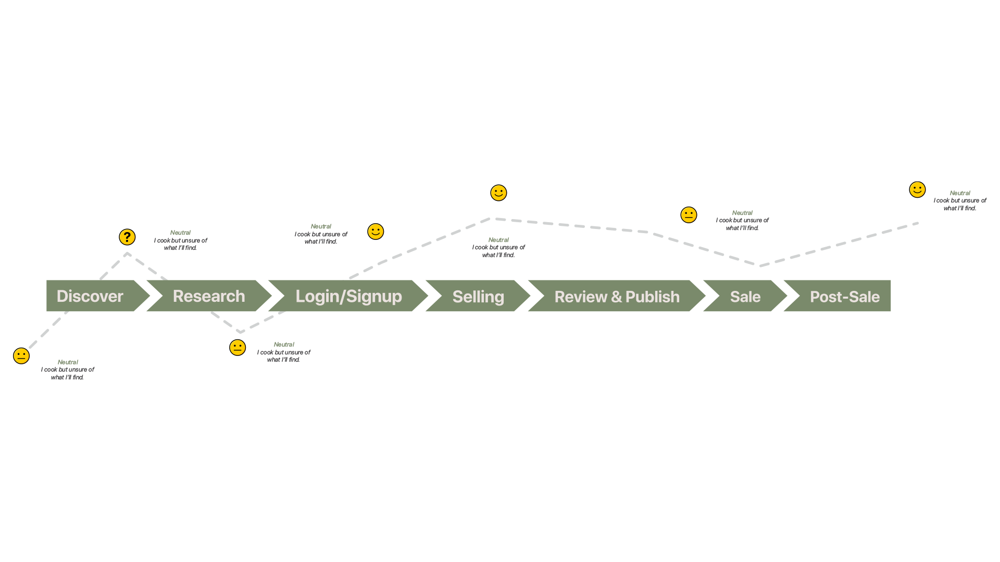
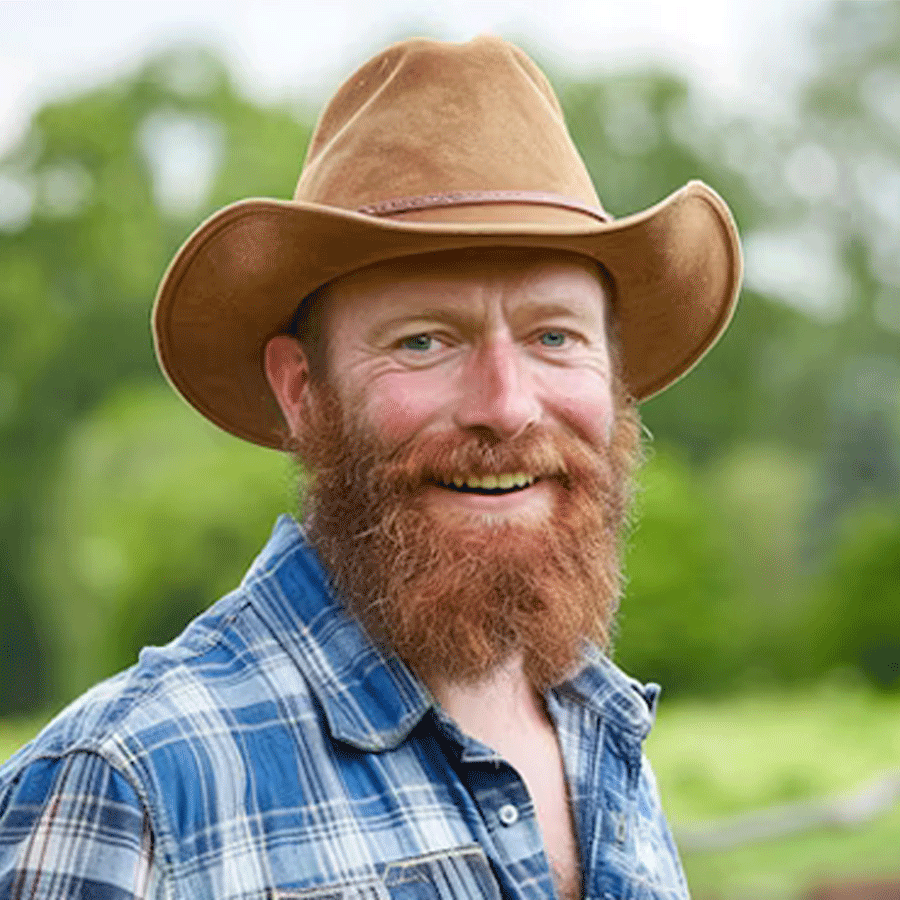
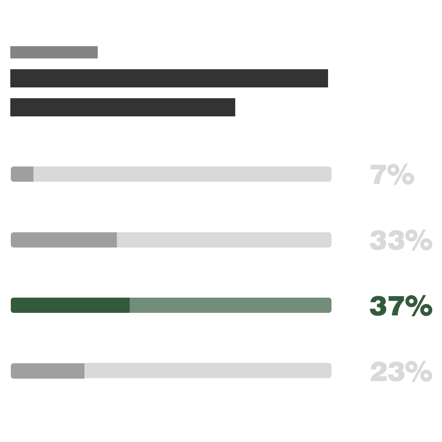
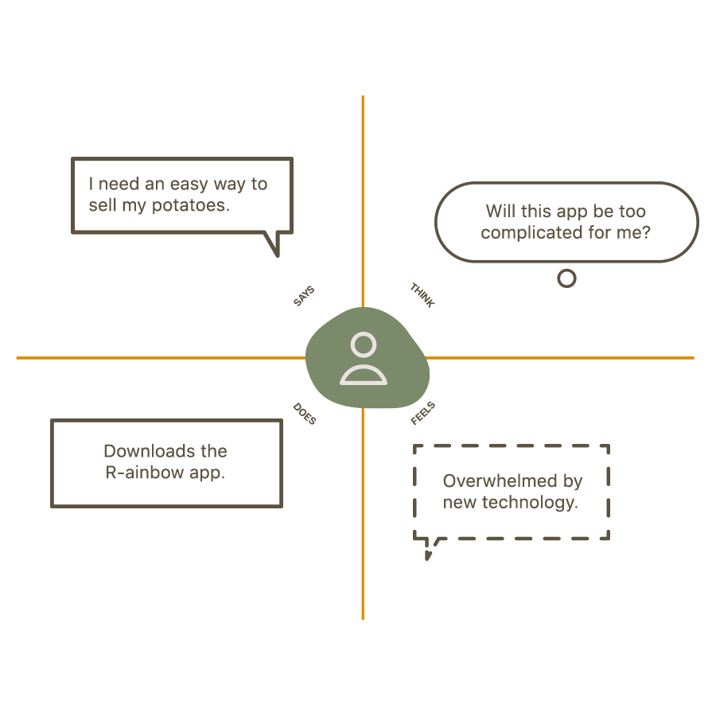
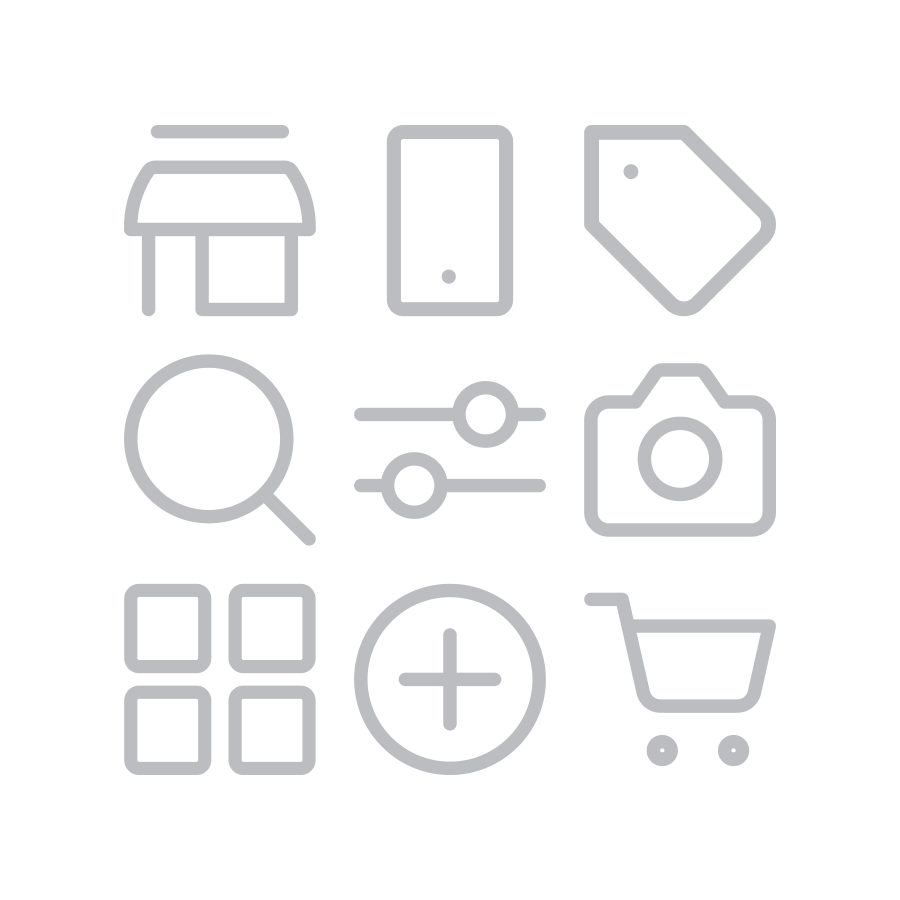
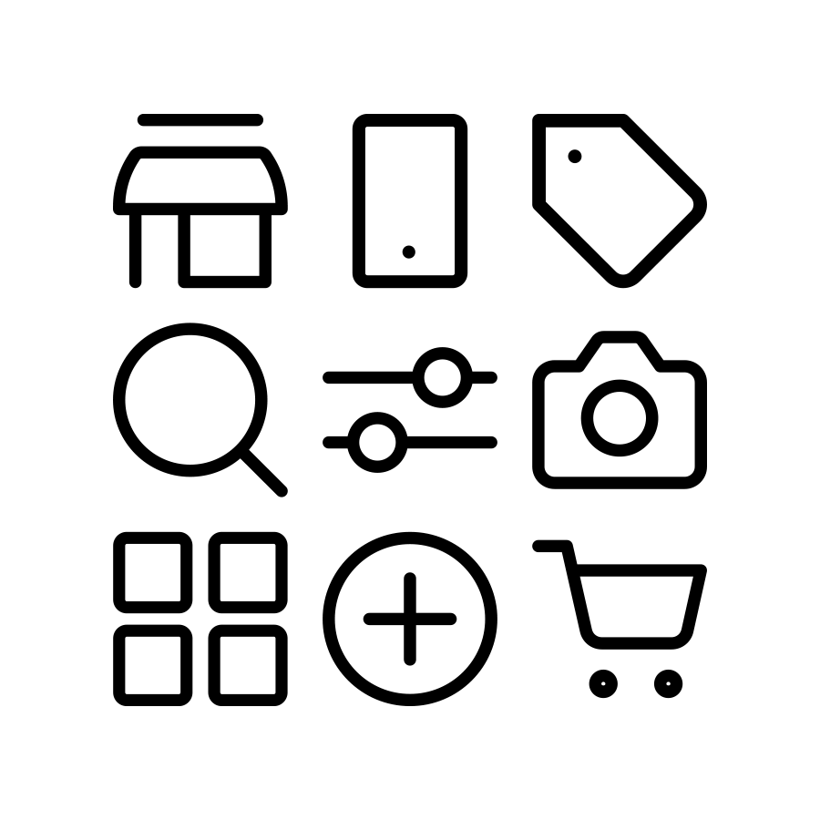
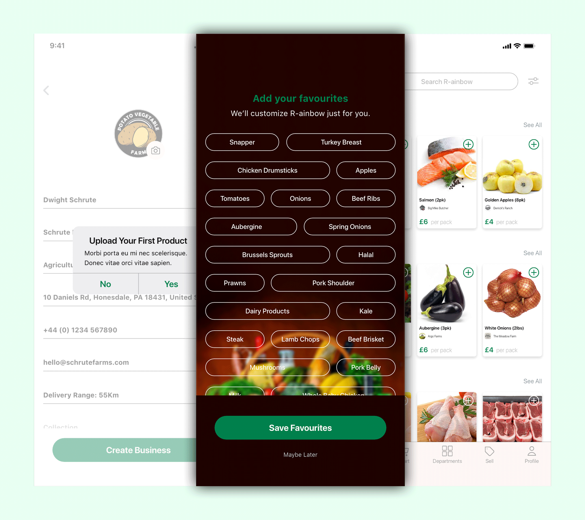
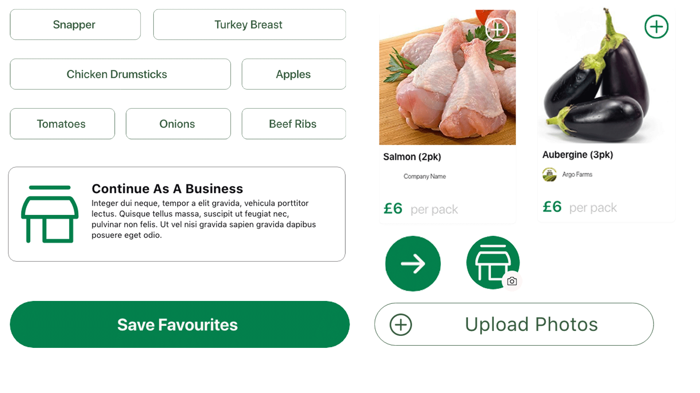

Client
R-ainbow
Role
UX/ UI
Project Type
Mobile Onboarding
Date
3 Weeks
The Objective
The objective of the R-ainbow mobile onboarding project was to design a seamless, intuitive experience that enables small producers and farmers, many with limited digital literacy, to easily understand and adopt the platform. The onboarding process was structured to be clear, engaging and accessible, ensuring that users could quickly grasp the app's value while feeling confident in navigating its features. By implementing simplified navigation, icon-driven instructions and trust-focused messaging, the goal was to boost user acquisition, improve engagement and increase conversion rates. Additionally, continuous user testing and iteration ensured that onboarding remained user-centric, addressing key pain points and making R-ainbow an indispensable tool in the agricultural marketplace.
The Process






30%
Increased Conversion Rate
A smooth, compelling onboarding journey can boost conversion rates for free-to-paid users or desired actions by up to 30%.
26%
Higher User Engagement
An optimized onboarding process that clearly communicates value and functionality leads to increased engagement with core app features, resulting in 26% more interactions within the first week.
40%
Increased Sign-Up Completion Rate
A streamlined and user-friendly flow leads to higher sign-up completion rates, reducing drop-offs by up to 40%.
One of the main obstacles is ensuring a streamlined onboarding process while consistently gathering user feedback for ongoing optimization



"R-ainbow has made selling my produce so much easier. The app is simple to use, even for someone like me who isn’t very familiar with technology, and I can now connect with buyers quickly without any hassle."
Dwight
Interactive Prototype
The Brief
Business & User Goals
The business goal for the R-ainbow app was to attract and retain users, particularly those in rural or under-connected areas. The goal was to create a highly intuitive onboarding process that would help users—many of whom may have limited digital literacy—quickly understand how R-ainbow works and how it solves their problems. Additionally, there was a focus on driving user acquisition, as well as sales generation through an easy-to-navigate platform.
The user goal was to help farmers who may not be tech-savvy understand how the app can benefit them. User acquisition was key, with the onboarding process designed to be easy and clear, helping users feel confident in their ability to use the app. By addressing pain points in agricultural practices, R-ainbow aimed to empower users and build trust, ultimately creating a product they would love, use regularly, and share with others.
The Process
I conducted the research in several phases:
Initial User Surveys: To gather demographic information and understand the needs and frustrations of potential users (primarily farmers in rural areas).
User Interviews: I spoke with a small group of farmers to understand how they used technology, what apps they found helpful, and what challenges they faced.
Competitive Analysis: I analyzed food delivery, transportation and financial apps and digital tools to see how they approached onboarding for non-tech-savvy users. This helped shape the app’s simplified design and ensured we stood out from competitors.
Who Did You Speak To?
I primarily spoke to: Farmers in rural areas who fit the user persona of being non-tech-savvy. App developers who provided insights into what technical barriers might exist for users in rural areas. Marketing teams to understand the messaging strategy and how to make R-ainbow feel welcoming and valuable to users right from the start.
Did You Play This Research Back to the Business?
Big Revelations from the Research?
A key revelation was the lack of trust in apps among non-tech-savvy users. Many farmers expressed concern about apps being difficult to use or not delivering on promises. This was crucial for shaping the brand messaging to focus heavily on trust, simplicity, and clear instructions from the moment the user opens the app.
How Did the Research Steer the Direction of the Project?
The research highlighted that simplicity was paramount, so the design needed to prioritize easy navigation and clear, concise messaging. This led me to create an onboarding process that used iconography and simple language instead of jargon. The insights helped me align the app’s core features with the most important pain points the farmers faced, ensuring they could experience immediate value.
Time, Struggles & Lessons
If I had more time, I would have conducted further iterations on the onboarding process, especially by incorporating more advanced personalization. While the onboarding was simplified to accommodate users with low technical skills, there were missed opportunities for personalization that could have improved the experience even further.
One of the struggles was balancing the needs of non-tech-savvy users with the desire to integrate enough advanced features to keep the app competitive in the marketplace. Simplifying the process without over-simplifying the user experience was challenging. Additionally, there were time constraints on how long we could spend refining the onboarding process, which meant iterative testing had to be done within limited cycles.
What I learned from these struggles is that testing with real users and gathering continuous feedback through in-app and customer interviews is critical.
Final Thoughts
The new onboarding flow for R-ainbow successfully addressed the needs of the target audience by simplifying complex features, offering clear guidance, and prioritizing user engagement. By iterating based on real user feedback and aligning the design with user needs, we were able to create a seamless experience that not only helped in user acquisition but also retention and engagement. The result was a user-friendly app that felt empowering for farmers, making them feel confident using the platform to improve their agricultural practices.